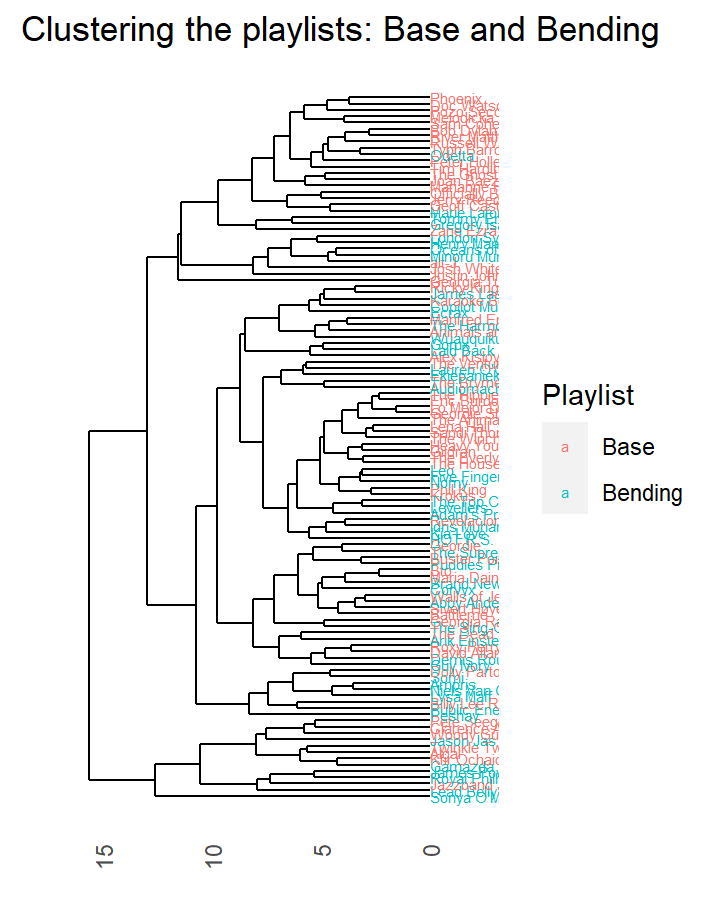
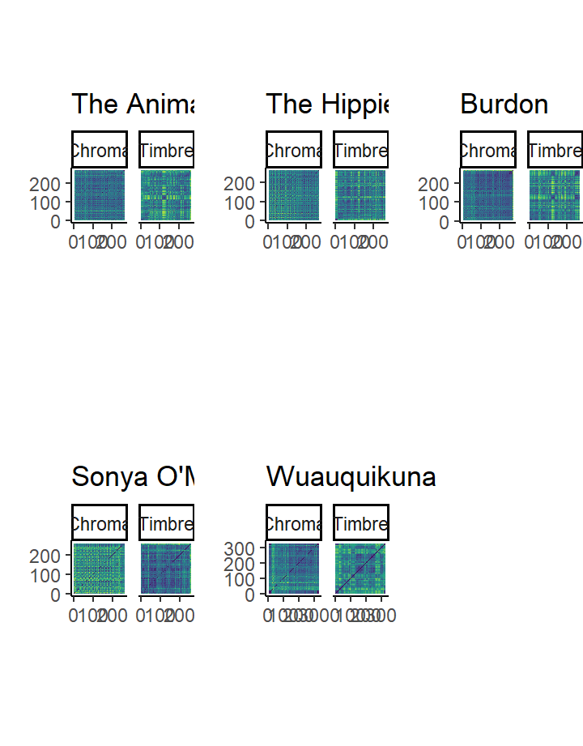
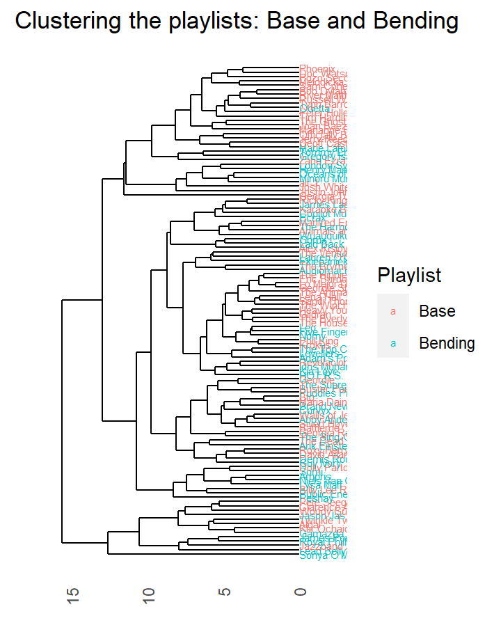
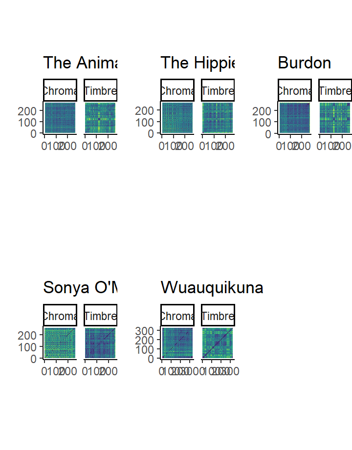
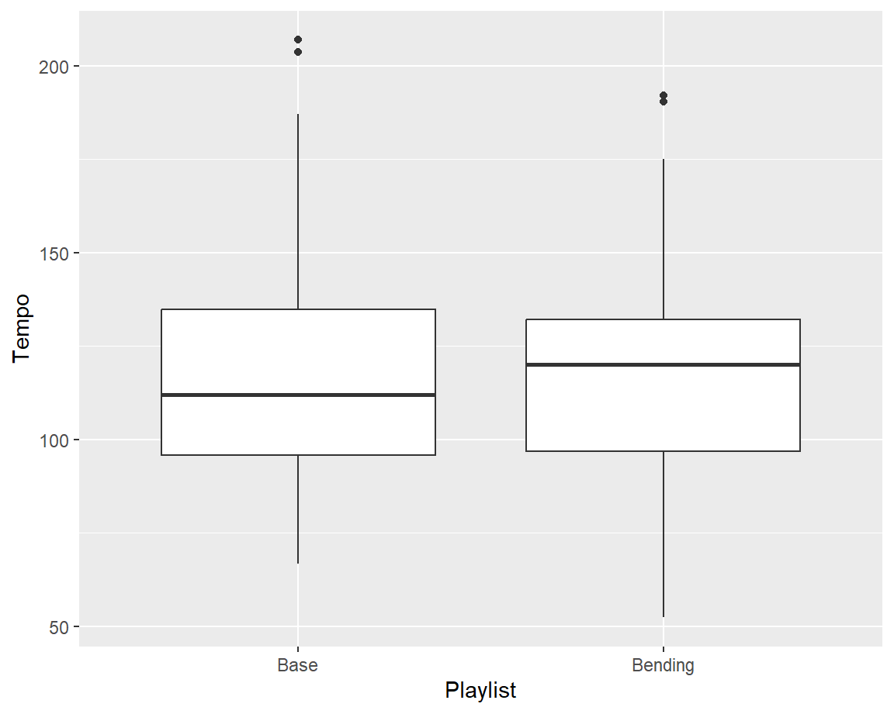

1. Corpus
Introduction
The house of the rising sun is an old folk song and like most folk
songs the exact origins and author are unknown. The oldest published
lyrics were written down by Robert Winslow Gordon, an academic collector
of folk songs, in 1925. Throughout the last century many different
covers of the song have been made with many different styles. Arguably
the most well known version is of course the one by The Animals from
1964. Its Iconic arpeggio chords, the haunting vocals and the synth
solo. Most people will point at this version of the song as the version
of the house of the rising song that they know.
However, many covers have been made of the song, 120 of which are in the
corpus. Ranging from covers that stay very true to, what we will take as
the original song, the Animals version, all the way to covers that
take most people a little time to recognize. But what makes a cover a
very different style version of a song, but still recognisable? And is
there a way to classify songs as a very similar style version as opposed
to a very different one?
This portfolio tries to answer which features are most important in
classifying covers that are very similar to the original and covers that
are very different from the original, when splitting the songs on genre.
Looking at the differences between all the covers in the large
collection, to see whether certain the Spotify generated features or
lower level track analysis will show a good way to make a
distinction.
In the end the theory will be tested by training a random forest model
on the features that were found to see whether they make a good
classification tool to make a good distinction between the similar
genres and the genres that differ a lot from the Animals version of the
house of the rising sun.
Explanation of the song
This is the divide of the corpus into the two genre playlists. The
divide was based on the :
The concept of making versions of a song is interesting, as what
makes it a cover and what makes it a different song? These covers all
lean heavily on the lyrics (although some tracks are fully instrumental)
and the motif and chord progression of the song:
Am - C - D - F - Am - E - Am - E7
I - III - IV - VI - I - V - I - V7
Most of the versions especially the earlier versions are in the key of A
minor, so in the explanation this will be used as the key to explain the
song other than the intervals.
Genre distribution

The first choice to look at is genre. Do the versions that are
closest to the original version get categorized in a similar genre?
Genres tend to have similar style and build up, so one would think they
would be similar.
For this the corpus got broken up into two playlists: one base genre that adheres to the most appearing genres: rock, folk, country and blues and one genre bending playlist that includes many different genres, from scat jazz to Hip Hop.
2. Visualisations
Inputs
House of the Rising Sun
Stats on the corpus

The first plot shows that most of the versions uphold the Am key of
the original, but there is still some distribution. You can see that as
soon as people start playing around with the key they are more likely to
change the mode as well.
The second plot shows that the distribution of the key signatures is
fairly equal. The third plot however shows the major mode is used much
more frequently in the bending playlist.
It is fairly easy to change the key of a piece as one can simply
modulate all the notes of a piece. However changing the mode of a piece
can influence the vibe of the piece, which might be tied into changing
the genre.
Stats but without plot_grid


Energy, loudness and time signature
This plot shows the correlation between energy, loudness and time signatur The main cloud of datapoints seem to have a similar distribution. Only for a small group of data points you can see that the tracks with the most energy and the highest valence are in 4/4 measure.
Based on Forest
Energy distribution overall
This plot shows how the energy throughout the entire corpus.
3. Track level
Introduction
In this chapter well look into the more individual track level to look deeper into the differences of the covers. To the
Clustering

To get a first understanding of what songs are similar the entire
corpus was clustered. For the clustering a hierarchical clustering
algorithm was used. The different splits are showcased in the
dendrogram. The dendrogram shows a few clusters that are parted into the
two genre playlists fairly well. There are two almost perfect Base genre
clusters.
The Animals version is clustered into the middle into the very clean
base genre cluster. The songs that it is percieved to most similar to
are: Geordie Shore, Lo Mejor De Las Baladas Rock, Eric Burdon ande The
Hippie Band. The songs that it is percieved to be most different from
are: Sonja Malley and Wuauquikana.
Sectioning
These selfsimilarity matrices show the structures that the piece has
when it comes to chroma or timbre features. These songs are the most
similar and different within the corpus.
The Animals version shows a slight chorus-verse structures with a very
different bridge in the middle of the song. The Hippie and Burdon
versions show a very similar build up and also simulate the melody
repeating that the chromagram shows with the very small block
pattern.
The Sonja and Wuauquikuna version also show this melody pattern in the
chromagram which suggests they use the same melody (which is true
listening to the songs), but show a different timbre seqtioning. Both
these versions are instrumental and use piano and panflute
respectively.
Tempogram

The Animals tempogram shows a tempo of around 230 BPM, which keeps
very steady until just before the end of the song where it slows down.
This pattern is also present in the version of the Hippie Band, but the
version of Eric Burdon starts at around 200 BPM and speeds ever so
slightly throughout the song.
The versions of Sonya and Wuauquikuna show a slight different pattern.
Sonyas piano version was clearly hard to pinpoint due to the lack of a
rythm section. Wuauquikunas version starts out very unclear as this
section only contains the panflute, but around 80 seconds a faint
clapping appears which is replaced by a strumming guitar that show a
clear tempo aroun 200 BPM.
4. Forest and Conclusion
Introduction
Now we have found the features that show the difference between the genres and we will train an algorithm to see if these features can correctly make a distinction between the different genres of the covers.
Forest
This is how we trained it:
The results
The Forest never got very good as you can see in the numbers:
| Components | Precision | Recall |
|---|---|---|
| Base | 0.628 | 0.731 |
| Bending | 0.571 | 0.453 |
Conclusion
In all this portfolio shows that eventhough the covers in the bending genre playlist sound much different to The Animals version, it is hard to correctly predict them using MIR.